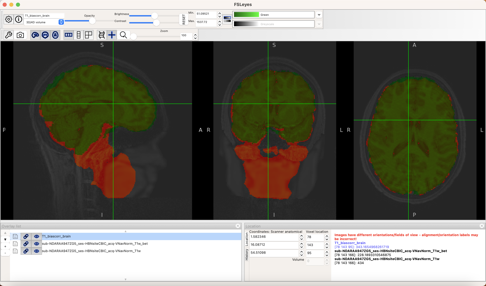
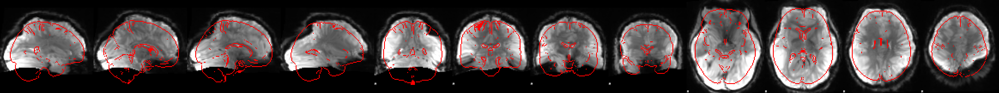
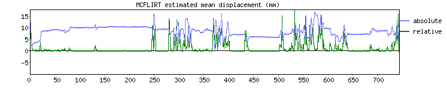

Code
echo $FSLDIR
fslmaths
imcp
## summon the FSL GUI
fsl &
## set working directory
cd '/Users/sd/Documents/sub-NDARAA947ZG5/ses-HBNsiteCBIC'Danni Shi
September 22, 2025
Assigned image: sub-NDARAA947ZG5
Step 0: summon FSL in my laptop and set the working directory. For some unknown reason, I cannot locate it to the Box folder in my terminal, so I hope that I am permitted to download it to my local folder.
Step 1: use -B argument to get the output for the bias-corrected image.
Step 2: apply brain extraction.
fsl_anat to process the anatomical image.This takes a while for me and I was concerned I might have opened up the wrong file…?
I am a bit confused by this task. I presume that we need to compare the image processed by fsl_anat and the brain extracted one, which can be processed by fsleyes?
Here is a screenshot comparing the two methods:

The image processed by fsl_anat is displayed in green and the image processed by fsleyes (i.e., by the fast and bet argument) is displayed in red. I prefer the one processed by fsl_anat, because the T1-weighted & brain- extracted & bias-corrected image covers regions in the spine and the jaw, which is apparently beyond the region of brain.
<T1 name>_brain.nii.gz in the anat folder to be used for fMRI preprocessing.No problem. You may find it in the Box folder.
No problem.
I use the default parameters and the required parameters (i.e., delete 6 volumes, use BBR for “main structural image” registration, turn on FNIRT, leave B0 unwarping off), except for the high pass filter cutoff.
Note that the longest duration for the positive stimulus in the Despicable Me movie clip is 116.8 seconds, and the longest duration for the negative stimulus is 103.2 seconds. So the longest block is 116.8 seconds. It is appropriate to set the cutoff twice as long as the slowest task time scale, which means we need to set the high pass filter cutoff \(>116.8 \times 2=233.6\) seconds. So I set the high pass filter cutoff at 240 seconds instead using the default 100 seconds.
The slice timing txt file has been uploaded in the Box folder.
I have also uploaded the plots in the Google doc.
Registration QA

Motion Correction QA
